Themes:
My university’s student media broadcast organization, TealTV, manages a growing number of digital media projects across multiple contributors, deadlines, production stages, assets, reviews, and publishing requirements. As its Vice President, I am responsible for ensuring that all projects are completed on time and to the highest quality standards.
However, as the number of projects increases, it becomes more difficult for editors and contributors to maintain a shared understanding of:
· Project status, ownership, production stages, next steps, and upcoming deadlines
· Review requirements, asset completion, feedback, and publishing readiness
· Centralized access to the latest content versions and project updates
I interviewed 7 TealTV executive team members across production, editing, sports, entertainment, and leadership to understand how projects move from assignment to publication. I focused on how teams track projects, deadlines, and ownership, how feedback and versions are managed, where information gets lost between teams, and what makes a project feel “ready to publish.”
· Project information is scattered across multiple places.
· Ownership and next steps aren't always clear.
· Finding the latest version or feedback can be difficult.
· Teams lack a shared view of what needs attention.
· There isn't a clear indication when a project is truly ready to publish.
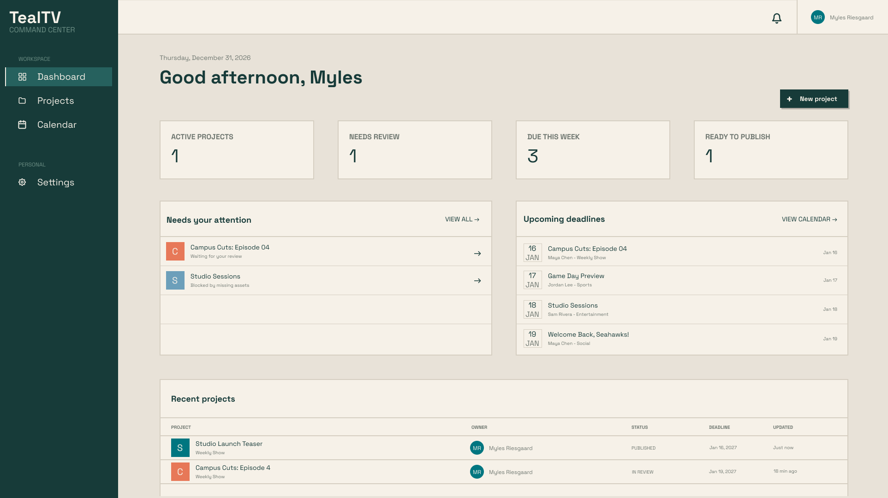
· Centralize project information - Bring projects, owners, deadlines, assets, versions, and feedback into one place
· Make status visible - Clearly communicate where each project stands and what needs to happen next
· Improve collaboration - Give editors and contributors a shared source of truth for assignments, reviews, and feedback
· Keep production on track - surface upcoming deadlines, outstanding tasks, and projects that need attention
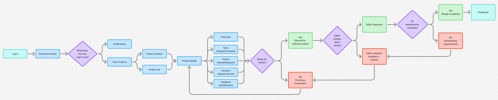
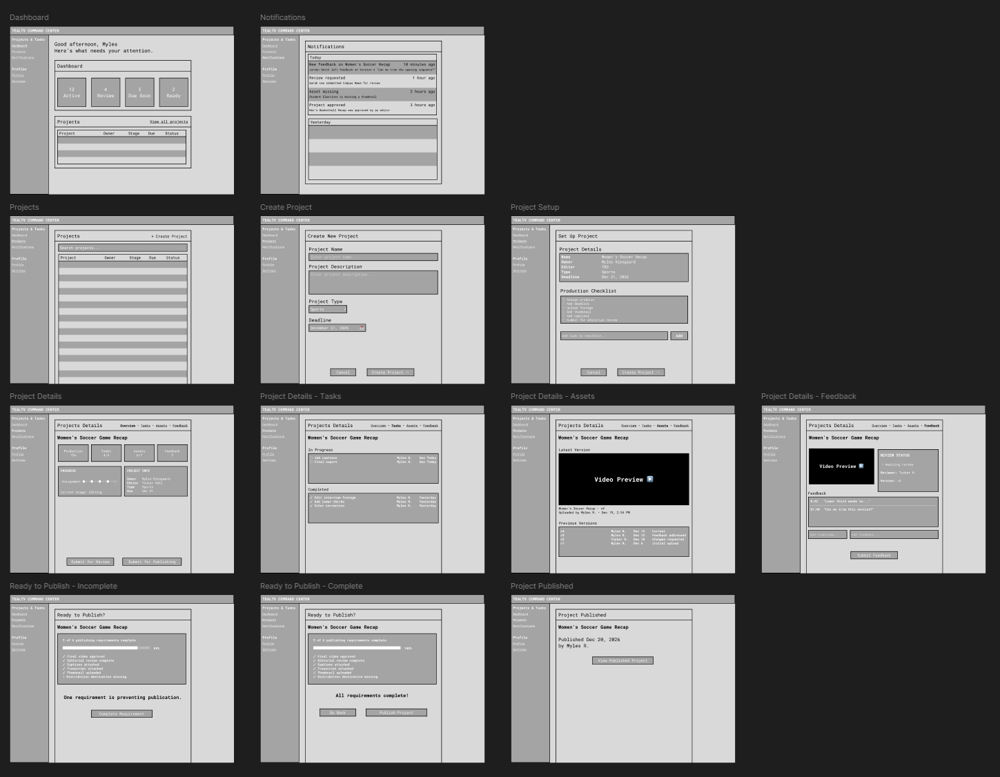
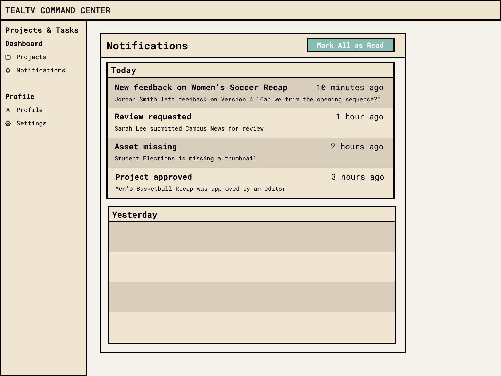
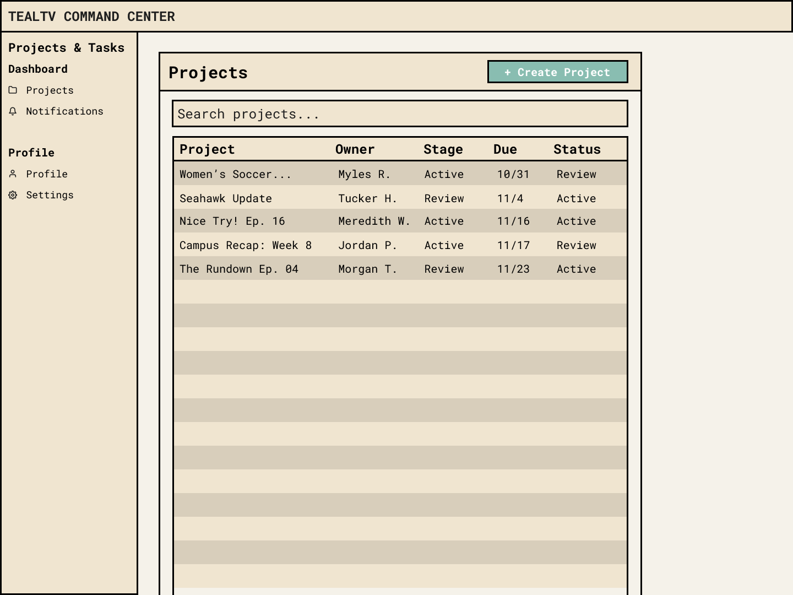
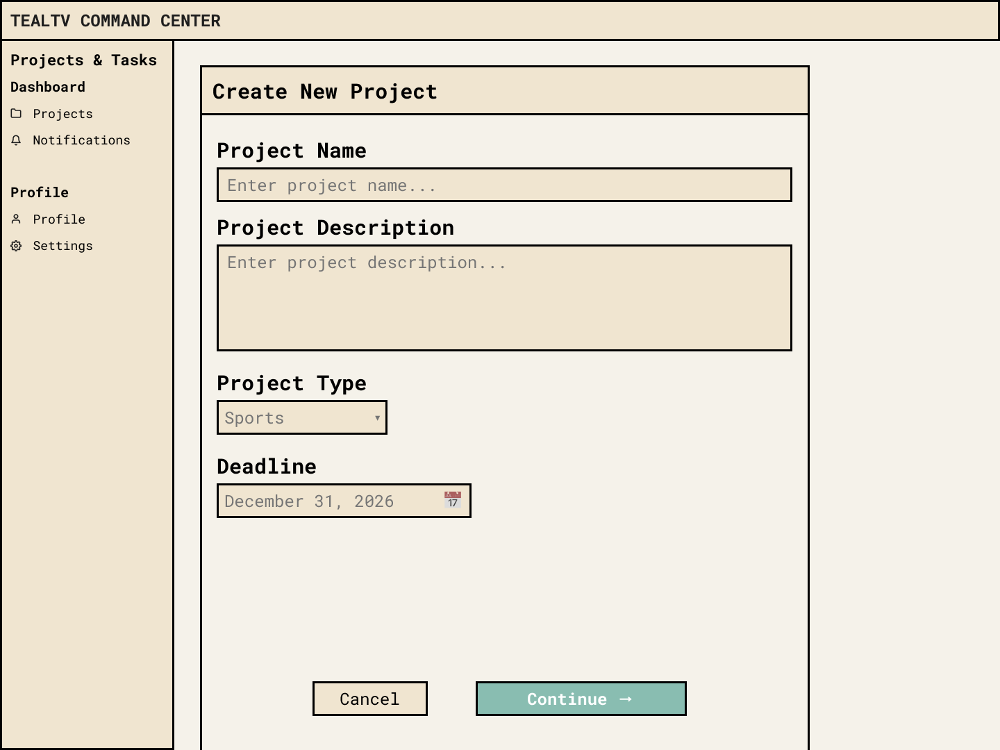
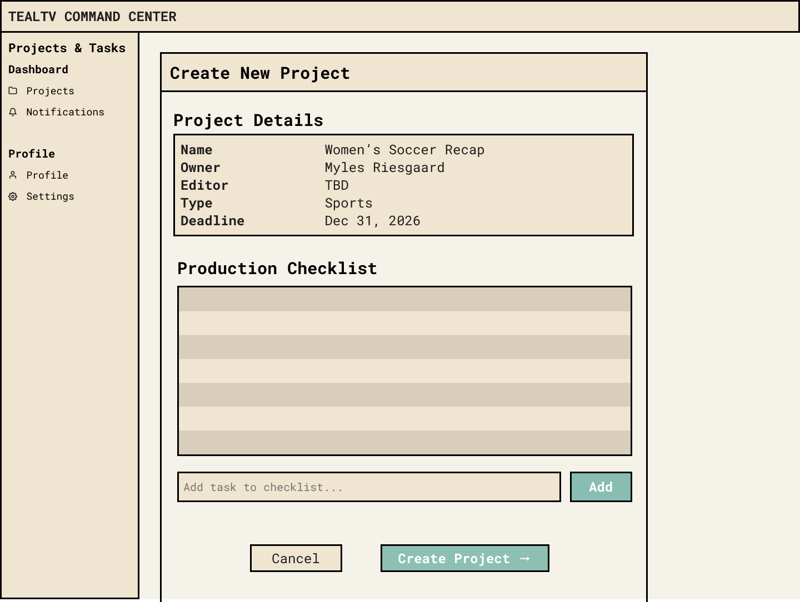
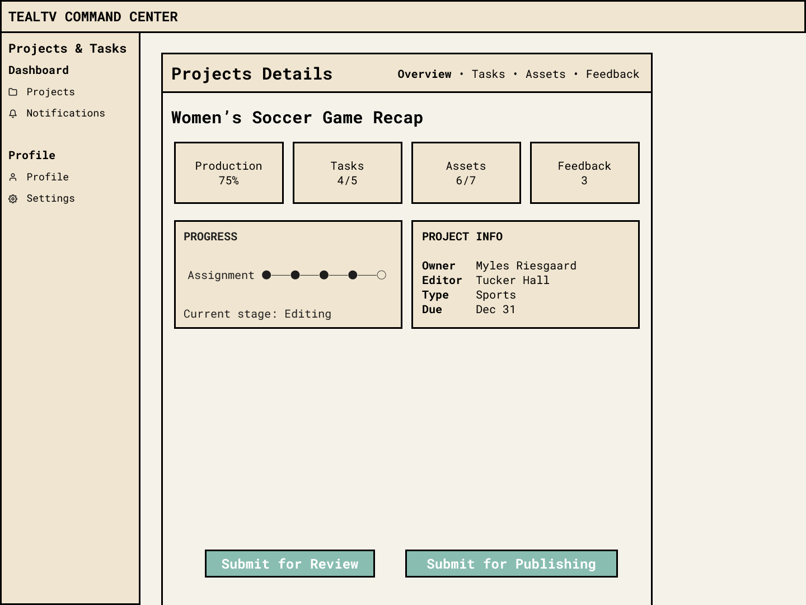
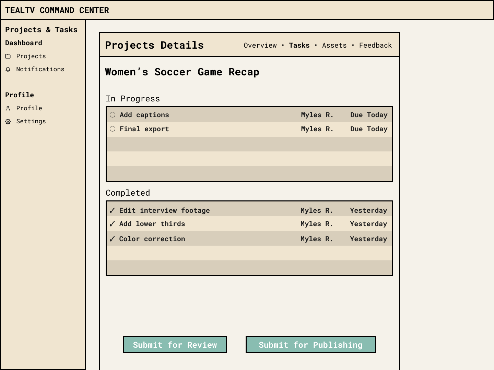
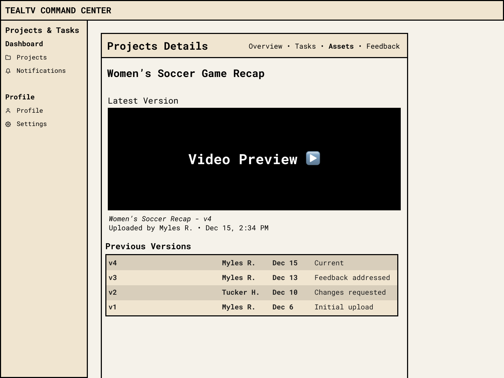
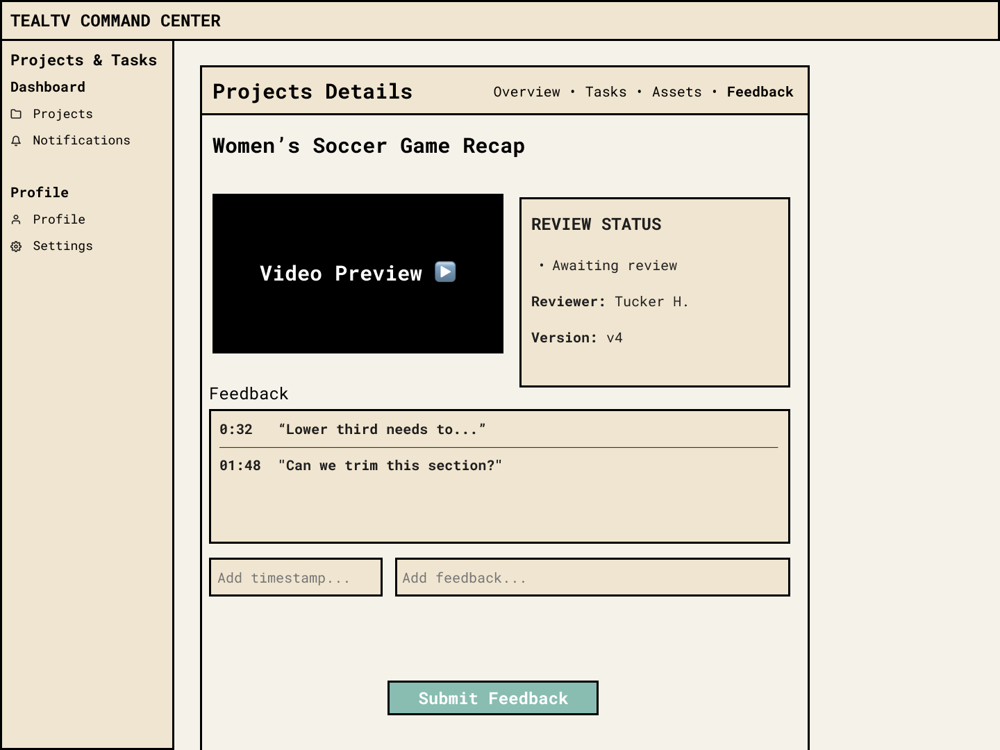
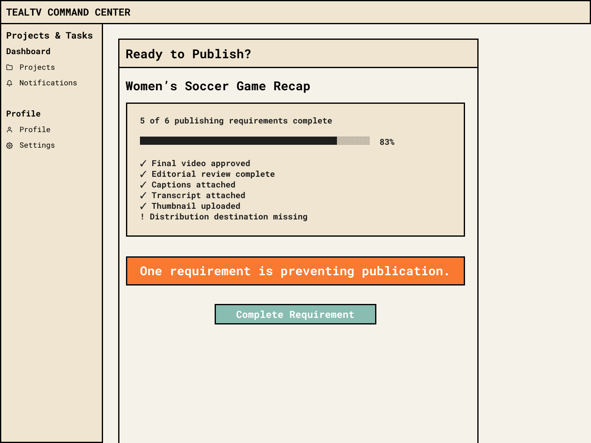
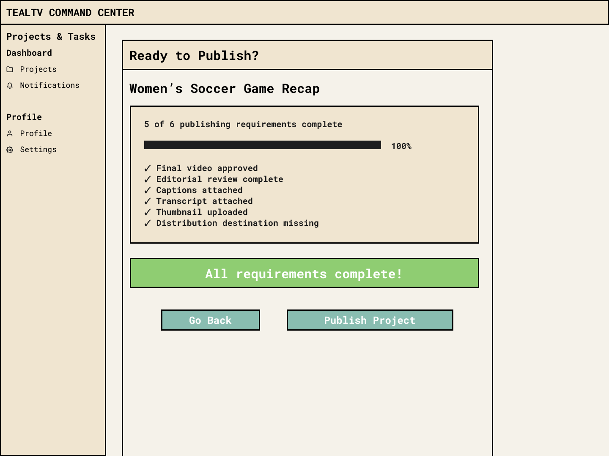
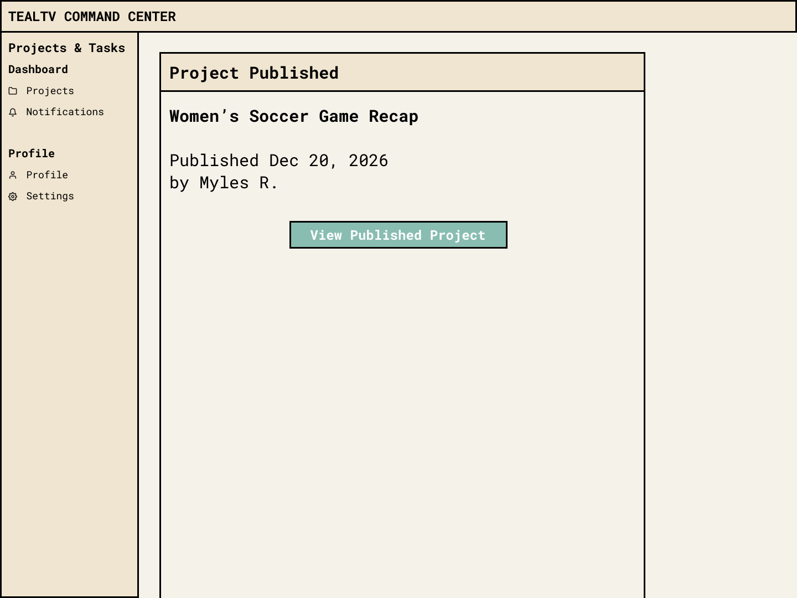